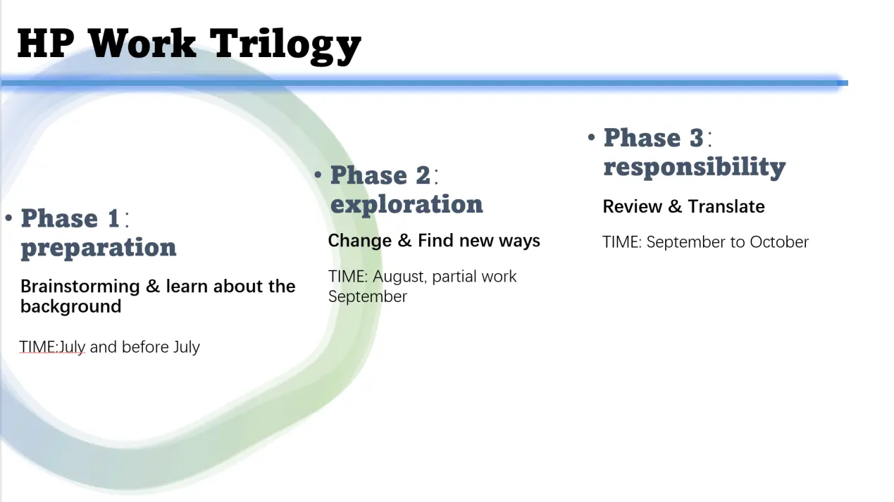
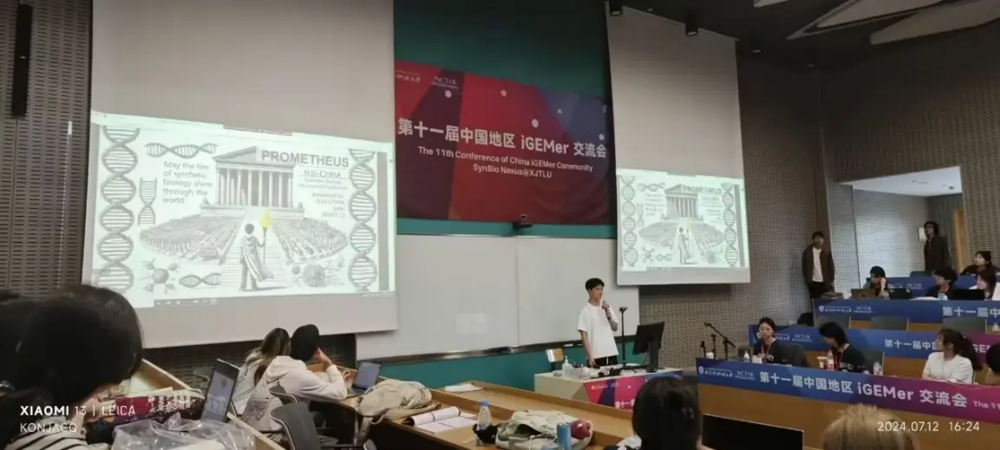
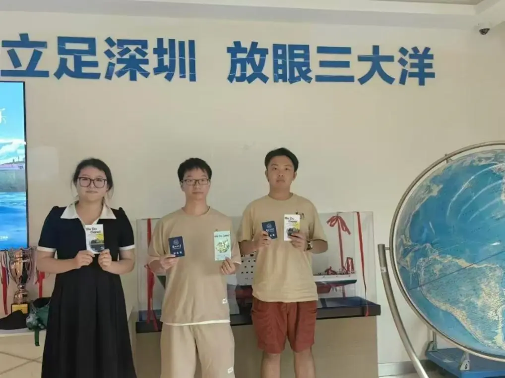
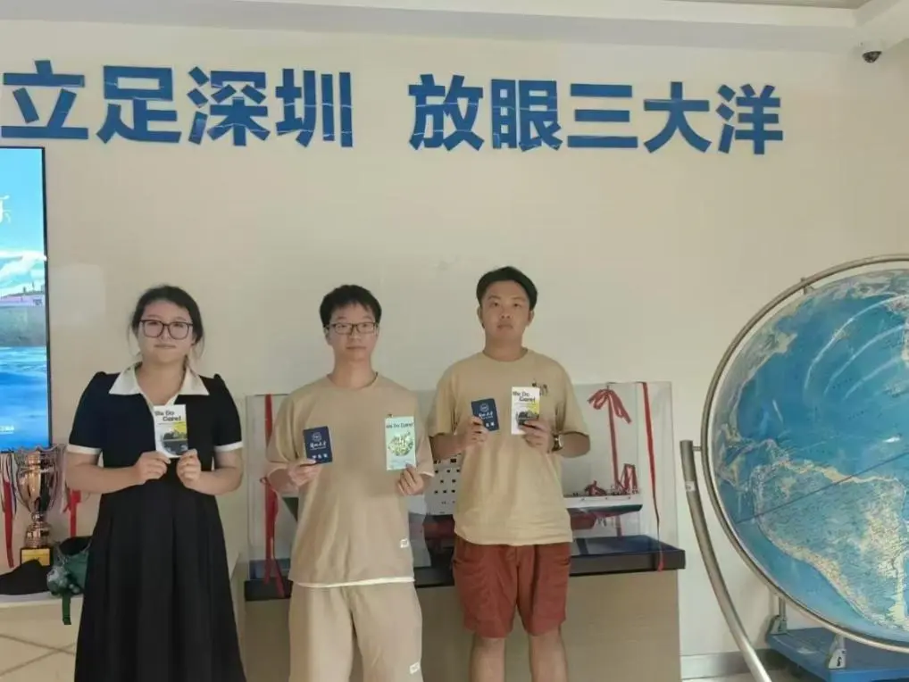
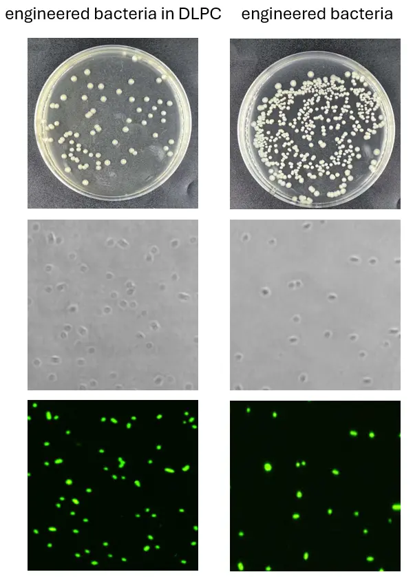
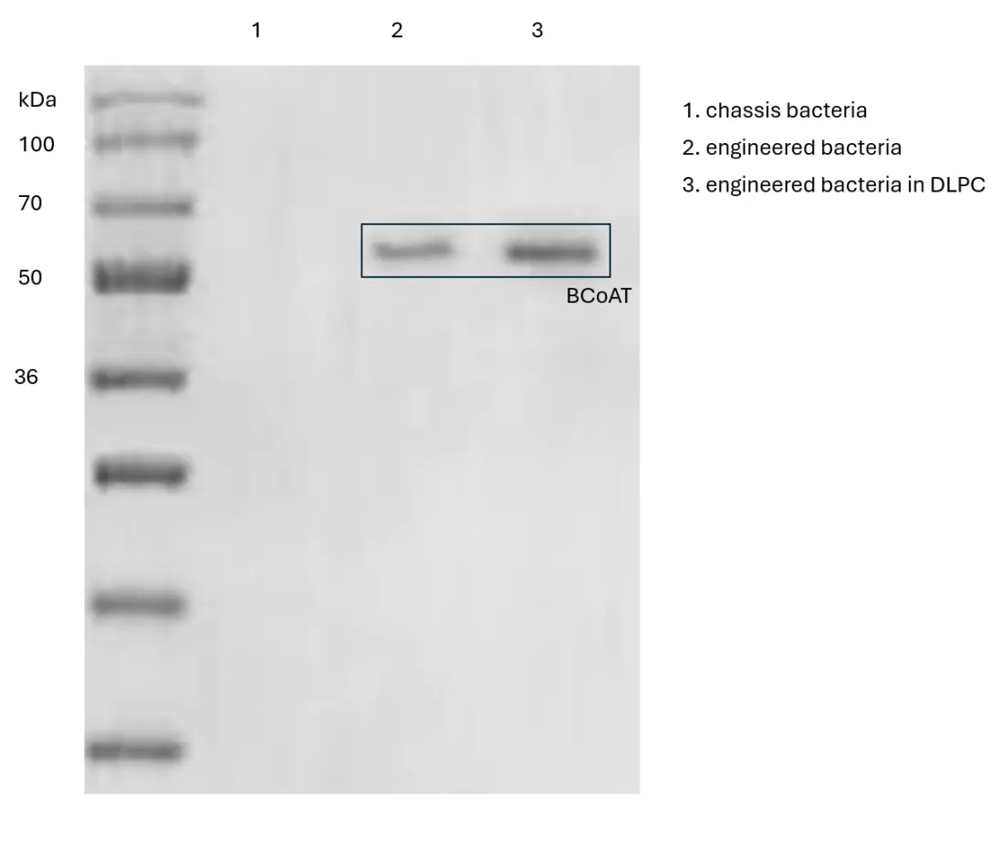
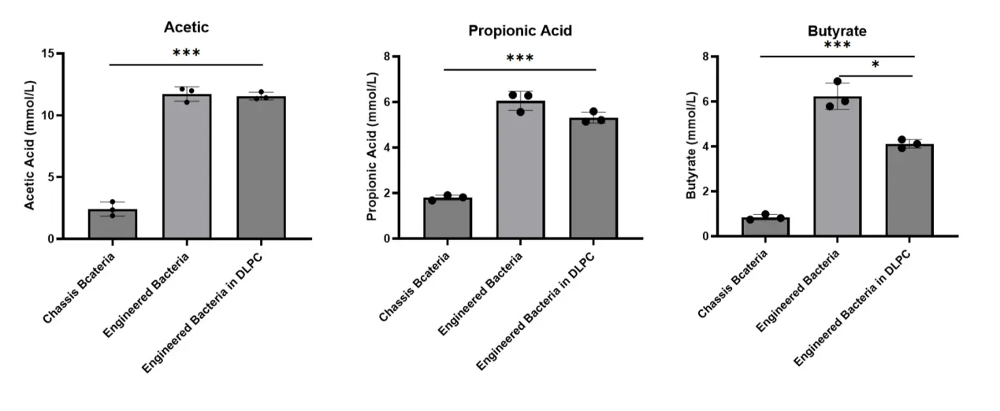
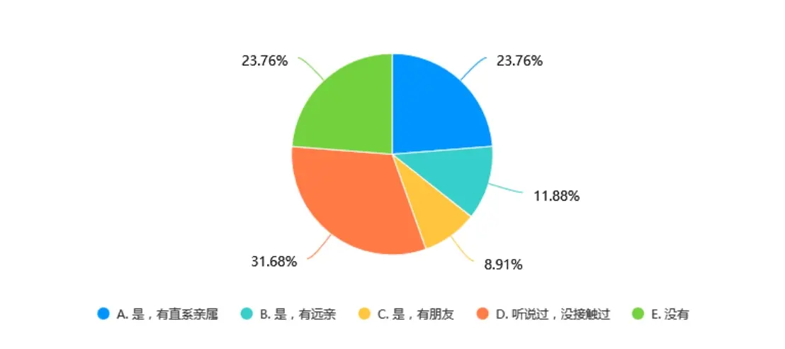
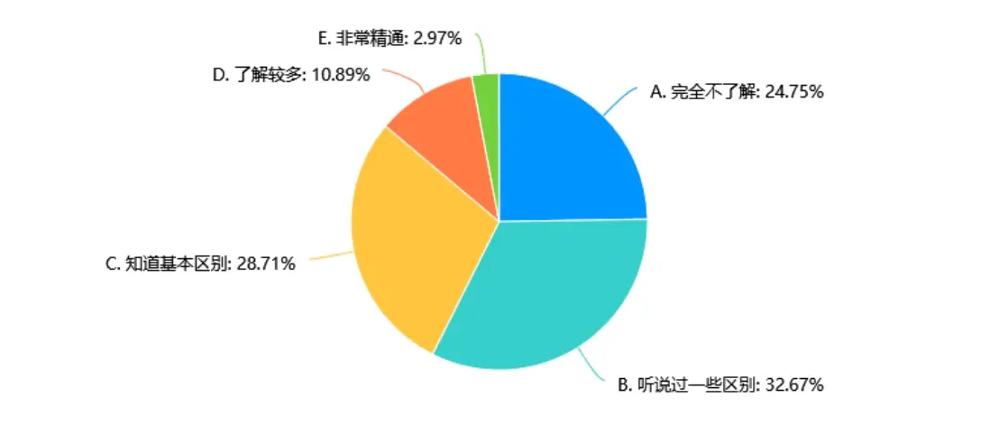
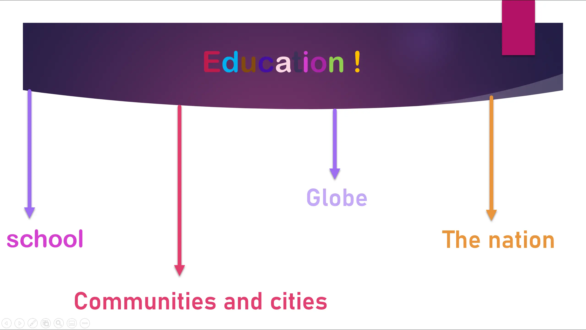

OVERVIEW
Our project focuses on the prevention and treatment of type 2 diabetes. Based on the current challenges in managing type 2 diabetes, we are dedicated to creating a more convenient, painless, and cost-effective solution to alleviate the suffering of diabetes patients, especially those who lack access to professional medical devices and face economic constraints.
To better realize and refine our ideas, we have adopted a synthetic biology approach and divided our work into three phases: the preparation phase, the exploration phase, and the responsibility phase. The effective connection between these three phases has enabled our project to smoothly transition from inception to implementation, ultimately achieving social impact and benefit.
Preparation phase
In the preparation phase, our team engaged in extensive brainstorming while also seeking and receiving a wide range of feedback.All the experts we encountered, professors, professionals, and industrial experts, had a valuable impact on the development of the project. With their knowledge and skills, the suggestions they offered have integrated effectively into the project's overall strategy and execution.We interviewed company representatives to gather suggestions for project improvement and maintained ongoing communication with them. We also visited various departments in hospitals and consulted frontline physicians to obtain advanced, accurate data and cutting-edge treatment methods. All of these efforts provided strong support for our project.
Origin
The inspiration for our team's project came from an accidental event. The team leader encountered a hospitalized patient with type 2 diabetes during an internship. This patient had been hospitalized for diabetes and was discharged with instructions to take metformin at home to control their blood sugar, but the results were unsatisfactory. Last year, the patient was readmitted due to complications. The worsening condition, along with years of medication, severely impacted the patient's health and placed a significant financial burden on their family. We realized that traditional treatment methods for type 2 diabetes are not only expensive but also ineffective. This raised the question: could we find a cost-effective solution to this problem?
With this inquiry in mind, team members conducted a literature review and learned that diabetes, characterized primarily by high blood sugar, is one of the most common and rapidly growing chronic metabolic diseases worldwide. Over recent decades, the number of diabetes patients has surged, with authoritative statistics indicating that there are currently 415 million diabetes patients globally. The onset of diabetes is usually accompanied by a series of macrovascular and microvascular changes, with related complications being a major cause of patient mortality. Meanwhile, existing treatment medications have not met clinical needs.
Furthermore, our literature review revealed that GLP-1 has significant blood sugar-lowering effects, as well as the ability to reduce body weight and lower the risk of atherosclerotic cardiovascular diseases. According to the 2023 American Diabetes Association guidelines, GLP-1 receptor agonists (GLP-1RAs), which provide cardiovascular benefits, are recommended as first-line treatment options for type 2 diabetes in addition to metformin therapy.
Further understanding
After learning about the promising prospects of GLP-1 for treating type 2 diabetes, we sought to further explore the significance and feasibility of GLP-1 in diabetes treatment. Our first stop was the First Hospital of Lanzhou University, where we interviewed several physicians, including Professor Liu Yatao and Professor Tang Jianming, from different departments. Through discussions with these physicians, we gained a deeper understanding of the underlying mechanisms of type 2 diabetes and various treatment options available.


Based on Professor Liu's suggestion, we went to the Health Checkup Center of Lanzhou University. After communicating with the staff, we learned that due to rising economic levels, diabetes has gradually become one of the major threats to human health. This is mainly attributed to the progressive insulin resistance caused by changes in dietary structures. Notably, the incidence of type 2 diabetes is increasing yearly, and it is gradually affecting younger populations, particularly those in their twenties and thirties. This realization further strengthened our commitment to helping diabetes patients.
We also gained insights into the characteristics of populations that are prone to diabetes, as well as solutions to some more detailed issues that arise during treatment and management.

To ensure that our data was not affected by regional differences, we visited multiple provinces and conducted friendly exchanges and learning sessions with local hospitals. After completing our initial plans, we reached out to several companies. During our discussions with business leaders, we discovered that the current market for intervention drugs primarily consists of oral medications, including metformin and glipizide. These drugs have issues such as rapid metabolism and a short duration of blood sugar control, necessitating frequent dosages, which poses significant challenges for patients both in terms of mobility and financially. Additionally, metformin may carry risks of chronic inflammation.
In contrast, glucagon-like peptide receptor agonists and their analogs represent cutting-edge treatments for type 2 diabetes. Currently approved glucagon-like peptide receptor agonists, such as semaglutide, address the issue of metformin's short action duration; however, they are expensive and require injection, making self-administration less convenient.
We also learned about patients' preferences and feedback regarding their medication choices. This information provided us with crucial insights for the precise positioning of our products, greatly aiding our later efforts to scale and commercialize our experimental results. Ultimately, we were able to find the most suitable partners for collaboration.Our team engaged in an interview with Manager Liu who focuses on committing to human nutrition and health research, targeted treatment of three high mainly chronic diseases and spleen and stomach poor sub-health people, Manager Liu shared his wisdom on pitching, networking, team-building, and the difficulties of establishing a startup during the creation of the company. He shared his wealth of knowledge, providing guidance and advice that extended far beyond conventional business strategies. He brought practical experience and a unique perspective to the table.
Exploration phase
During the project exploration phase, in order to better advance the project's development, we interviewed experts in the field of bioscience both domestically and internationally. We discussed the feasibility of the project as well as some specific details, gaining a basic understanding of the incidence of type 2 diabetes both at home and abroad. These experts in the bioscience provided us with many practical and effective suggestions, offering insights into the problems and uncertainties we encountered during our experimental work. Through our conversations with them, we gained a deeper understanding of our mission and developed new ideas for the future implementation of the project. As a project focused on disease treatment, our ongoing communication with experts and clinical doctors in related fields has been crucial. Professors Liu, Xie, Tang, and Jin have consistently provided us with support and care, offering highly constructive advice from the design of the plan to the issues arising during the experiments.
After initially verifying that GLP-1 indeed has an impact on the metabolism of substances like glucose, we realized the need to define the specific scenarios for drug use and its positioning. In this context, we reached out to experts in the biosciences, Professors Xie Xiaodong and Jin Weilin. After presenting our ideas and uncertainties to them, both professors pointed out significant issues we were facing and suggested that we could utilize microorganisms to regulate the gastrointestinal tract. They noted that synthetic biology, a popular field in recent years, could provide the knowledge needed to construct engineered bacteria that would ensure both practicality and economic viability. Consequently, our team began to research and discuss synthetic biology.
During our inquiry, we learned that the gut microbiota, as a crucial component of intestinal microorganisms, secretes short-chain fatty acids that promote insulin release, alleviate oxidative stress, and inhibit lipid synthesis, indicating potential therapeutic value for type 2 diabetes. This information opened up new avenues for achieving our desired goals. Considering the current drug limitations, we preliminarily planned to design the drug for oral administration, thus avoiding the inconvenience for patients who resist needle injections.
Through brainstorming sessions, we designed the drug's basic mechanism of action to allow for oral intake, after which the drug would enter the gastrointestinal tract and penetrate the intestinal epithelium into the bloodstream via a designed synthetic biology reactor, subsequently enriching in the liver. After discussing our ideas with the professors again, they offered high praise and affirmation of our project while providing constructive suggestions on other aspects, such as the project’s safety and the industrialization of its results.
To ensure the safety of the engineered bacteria within the body,conceived the idea ofincorporatin an arabinose-inducible lysis system into the plasmid. This way, patients could orally administer arabinose after a certain period of intake of the engineered bacteria, allowing them to autonomously halt the bacteria's activity. This conversation expedited our progress on the business plan.
Through market research, we identified a scarcity of relevant drugs. We learned that many patients suffer from various metabolic diseases due to poor dietary habits. Our project aims to innovatively regulate gut lipid metabolism, addressing type 2 diabetes while also having a regulatory effect on multiple diseases. Even healthy individuals can benefit from our product, allowing for blood sugar and lipid control, ultimately leading to weight loss and a reduced risk of cardiovascular diseases.
The research direction of this project is broad, with potential for treating various diseases. According to WHO data, the number of individuals with type 2 diabetes globally had risen to 422 million by 2014, with numbers continually increasing. The demand for such drugs is vast, and the market shows robust potential, indicating a wide range of applications and significant social value.
Having fully justified the feasibility of the project and its market potential, we contacted a biopharmaceutical company and submitted a detailed project plan. The company executives provided high evaluations and substantial support for our project’s development and marketing. We are also committed to collaborating with other universities to gain insights from pioneers in the synthetic biology industry, facilitating communication and cooperation among different teams, and collecting feedback on our project.
We engaged in in-depth discussions with outstanding students from several institutions, including the University of Macau, Beijing Institute of Technology, Dalian University of Technology, and Nanjing Medical University. The results generated from the collision of different ideas proved to be highly beneficial for everyone involved.
We also participated in academic exchanges and related competitions to better refine our product to meet the requirements of the iGEM competition. At these events, we were exposed to many cutting-edge designs, and afterwards, we established contact with several participants who provided professional advice regarding our project. The feedback we received during these interactions has left a unique mark on our project.
 

Ultimately, we chose to design a GLP-1 recombinant protein, linking PelB as the leader sequence with GLP-1; Dnak serves as a key protein in the glucose control module, expressed at the tail end of GLP-1 via a flexible linker peptide to achieve programmed release. Safety is ensured by the arabinose operon and its downstream toxin-antitoxin module, which acts as a suicide switch for controlled bacterial apoptosis. We conducted three phases of experiments, focusing on different issues and making corrections along the way. The experimental results became increasingly stable and effective through our continuous improvements. The first phase involved chassis engineering. After evaluating the selection of gut microorganisms, we decided to use Escherichia coli Nissle 1917 (ECN1917) as the foundational microorganism for our system. We conducted tests under various survival conditions, and to avoid potential exposure to immunogenic components and the division of engineered bacteria, we designed an outer membrane to encapsulate the bacteria.
The first phase involved chassis engineering. After evaluating the selection of gut microorganisms, we decided to use Escherichia coli Nissle 1917 (ECN1917) as the foundational microorganism for our system. We conducted tests under various survival conditions, and to avoid potential exposure to immunogenic components and the division of engineered bacteria, we designed an outer membrane to encapsulate the bacteria.
After that, we compared the capabilities of the engineered bacteria and confirmed that the project’s engineered bacteria excelled in the required aspects.
In the second phase of the gene expression validation project, we first verified whether the recombinant plasmid was successfully transformed into the chassis bacteria. Then, we further examined protein expression, which included two components: the key protein and the target protein.
In the third phase of the gene function validation project, our main goal was to evaluate the functionality of the BCoAT gene, particularly the rate and level of short-chain fatty acid (SCFA) production. Subsequently, we validated the function of the GLP-1 recombinant protein, focusing on its role in glucose regulation through GLP-1 release.
Responsibility
During the practical improvement phase, we prepared questionnaires and conducted on-site interviews in densely populated areas targeting individuals at high risk for type 2 diabetes. We also visited nursing homes. To enhance the credibility of our research, we conducted special interviews with foreigners and gender minority groups. To broaden our perspectives, we engaged in friendly exchanges with multiple iGEM teams, sharing our ideas and concepts. Through these brainstorming sessions, we discovered that the public holds certain misconceptions about type 2 diabetes. As a result, we designed an educational outreach program targeting three main groups: communities, primary schools, and university students. In this program, we promoted awareness about the prevention and dangers of type 2 diabetes, educating the public on the correct attitudes and approaches to managing the disease. We also developed a plan for rural education, aiming to instill the right lifestyle choices in children from a young age, enabling them to see a broader world. Within our environment at Lanzhou University, we established a community to better disseminate knowledge about type 2 diabetes and synthetic biology, attracting more people to join us in raising awareness about these important topics.

Survey Statistics on Public Understanding of Diabetes
To have a better design of our project and gain more information regarding the public preference. We conduct background research and brainstorming at first, which clearly outline the objectives to guide our research and survey design. This survey aims to understand the level of knowledge of respondents about Type 2 diabetes, the relationship between lifestyle habits and disease risk, and their attitudes and behaviors towards prevention and management of Type 2 diabetes.
Social survey on the understanding degree of diabetes among residents in Lanzhou
The Background: From August to September, our team conducted a comprehensive social survey at neighborhoods, streets and campuses in Lanzhou, China, focusing on Public Understanding of Diabetes.
The questionnaire consisted of four key inquiries:
How diabetes affects individuals：
Does someone around you have type 2 diabetes?How has this situation affected your life?
How much people know about diabetes：
Do you know the main difference between type 2 diabetes and type 1 diabetes?
Do you know the main management and treatment of type 2 diabetes?
Do you keep an eye on new research and treatments for type 2 diabetes?
People's concern about diabetes：
Do you watch your diet and exercise to prevent type 2 diabetes?
Result
Our survey successfully collected responses from 101 individuals, providing valuable insights into Public Understanding of Diabetes of Lanzhou's residents. The findings revealed a noteworthy pattern:
1、According to the data table, more than half of the respondents (56.44%) said that they have someone with type 2 diabetes in their circle, with the highest proportion being their immediate family members (23.76%), followed by those who have heard of it but have not come into contact with it (31.68%). This indicates that type 2 diabetes has a certain influence in society, but the degree of direct relationship with the affected person may vary, leading to different levels of life impact. In light of this, it is suggested to strengthen public awareness and education on type 2 diabetes, promote healthy lifestyles, and facilitate disease prevention and control. At the same time, targeted health management and support measures can be customized for different groups to help them better cope with the impact of the disease on their lives.
A. Yes, immediate family
B. Yes, I have distant relatives
C. Yes, have friends
D. Heard of it, but not in contact with it
E. No
2、According to the data table, most of the respondents had a low understanding of diabetes：Most respondents had some understanding of the main differences between type 2 diabetes and type 1 diabetes, but their proficiency was low.Most of the respondents had some understanding of the management and treatment of type 2 diabetes, but the proportion of in-depth understanding was low.
A. No idea at all
B. Heard some differences
C. Know the basic differences
D. Know more
E. Very proficient
A. No idea at all
B. Heard about some methods
C. Know the basics
D. Know more
E. Very familiar

A. Always pay attention
B. Occasional attention
C. Pay little attention
D. Never pay attention
E. Not aware of such information
3、The survey subjects pay different attention to their diet and exercise, and some people occasionally or not much attention.

A. Very concerned
B. Occasional attention
C. Not paying much attention
D. Not paying attention at all
E. is not aware of the problem
Summary:
Through questionnaires, we collected information such as respondents' gender, age, education level, method of medical expense payment, proportion of medical expenses, source of knowledge about Type 2 diabetes, disease status, level of understanding of symptoms, awareness of risk factors, prevention awareness, understanding of management and treatment methods, and level of interest in new research and treatment technologies.Respondents have some understanding of type 2 diabetes, but there are still incomplete knowledge and insufficient attention.
Those highlights a need for more in-depth educational campaigns that enhance the public's understanding of diabetes, its symptoms, and treatment options. And though the impact of Diabetes varies based on the closeness to the affected person.Strengthening public education and fostering a supportive environment for disease prevention and control is crucial. Tailored health management and support for different demographics can help mitigate the disease's impact on daily life.

During our investigation, we realized that residents' neglect of diabetes-related knowledge and daily prevention highlights that relying solely on medication cannot completely address the issue of type 2 diabetes. The "three early" prevention strategies are far more important for controlling the disease than treatment itself. Therefore, while conducting interviews, we also provided interviewees with accurate information about type 2 diabetes and prevention methods. After discussions with other teams, we decided to collaborate and establish a teaching support team to go to impoverished areas, spreading a more comprehensive knowledge system and correct caregiving practices. Our goal is to disseminate the seeds of type 2 diabetes prevention to every corner of society.
Education and collaboration
LZU-MEDICINE-CHINA team constantly engages in profound reflection at every stage of our project: Are we truly fulfilling our responsibility to the world and making a positive impact? Have we met our initial objectives? This mindset has led us to make a difference in the world. Therefore, we designed an educational outreach program targeting four main groups:schools, communities and cities, the nation, and the globe ,as well as the communication within the iGEM community.
Communities and cities
The LZU-MEDICINE-CHINA iGEM team embodies the principles of Integrated Human Practices by bridging scientific research and community engagement, particularly in the context of synthetic biology applications. Through various outreach initiatives, such as informative health seminars on type 2 diabetes prevention and management in local communities and elderly care facilities, our team effectively disseminates vital health knowledge. Our efforts to create multilingual educational materials reflect a strong commitment to inclusivity and global health awareness, ensuring accessibility to diverse populations. The use of social media platforms amplifies their messages, fostering interactive engagement with audiences worldwide.
While we emphasis on real-world applications of synthetic biology not only enhances public understanding of health-related issues but also inspires a new generation of scientifically literate citizens committed to societal well-being. By integrating scientific exploration with community service, the iGEM team cultivates a sense of social responsibility while demonstrating the transformative potential of science in addressing pressing health challenges. This holistic approach not only nurtures our team’s development as innovative scientists but also strengthens the fabric of the communities they serve, exemplifying the profound impact of combining research with humanistic values.
Schools
Elementary school education
The integrated human practice approach in the realm of synthetic biology emphasizes the vital connection between scientific education and community engagement. During our outreach initiatives, specifically our workshops at primary schools, we exemplified this philosophy by translating complex scientific concepts into engaging and approachable experiences for young learners. By conducting interactive activities, such as conducting experiments and creative projects like drawing DNA structures, our iGEM team facilitated an environment where elementary students could explore the fascinating world of synthetic biology. These interactions not only ignited the children's curiosity but also laid the groundwork for their understanding of health-related issues, such as diabetes prevention, through fun physical activities. We believe such educational outreach cultivates future generations of scientists and fosters a deeper appreciation for biological sciences. Ultimately, these efforts contribute to the broader objectives of the iGEM competition by advocating for science communication and aiming to make synthetic biology accessible and exciting to everyone, regardless of their background. This holistic approach ensures that science not only advances in laboratories but also resonates within communities, inspiring young minds to engage with and contribute to scientific exploration.
University students education
Our recent initiatives, such as film screenings, art competitions, and interactive workshops, illustrate this integration by merging scientific knowledge with creative expression. For example, viewing the film "Dying to Survive" not only prompted discussions about the ethical implications of drug pricing and patient care but also encouraged students to explore how synthetic biology can innovate affordable healthcare solutions. Similarly, our art on microscope slides event beautifully blended creativity with biology, fostering a deeper understanding of chronic diseases while making complex scientific concepts more accessible to the public. Through activities like these, we actively engage the community, inspiring participants to envision how they can contribute to the future of biomedicine. This approach not only enhances awareness of synthetic biology applications but also cultivates a sense of responsibility among young scientists, challenging them to use their knowledge for the betterment of society and the improvement of public health. By fostering collaboration and dialogue between researchers, students, and the broader community, we are paving the way for innovative solutions to pressing health challenges and cultivating the next generation of scientifically literate citizens.
The nation
We conducted a national survey and conducted street interviews. Based on the results of the survey and the street interviews, we drafted a proposal for the prevention and treatment of diabetes and launched the initiative nationwide through social media.
The globe
We produced brochures in multiple languages and a manual advocating for educational equity, hoping to create an impact that transcends national borders.
Additionally, regarding collaboration:In alignment with the principle of Integrated Human Practices, our iGEM team has been actively engaged in discussions and collaborations that bridge synthetic biology applications with real-world health challenges, particularly in the treatment of type 2 diabetes (T2DM). Recent dialogues with experts, including Professor Michael Nerich from the German-Chinese Medical Association and nutritionists from Thailand, illuminated the global impact of dietary habits on T2DM prevalence. Through both online and offline meetings, we explored cutting-edge synthetic biology strategies aimed at personalizing treatment protocols for diabetes patients, utilizing insights from diverse cultural dietary practices. Our participation in the recent Chinese Synthetic Biology Forum allowed us to present our team’s findings on metabolic mechanisms unique to T2DM patients, advocating for innovative, lifestyle-based therapeutic approaches that could enhance patient outcomes while minimizing chronic inflammation risks associated with traditional drug therapies. Furthermore, our engagement with industry leaders, such as Mr. Liu Jinghong of Jinghong Health, facilitated meaningful discussions on integrating advanced food technology with health management, promising potential collaborative research focused on developing tailored nutritional solutions for specific health demographics. These initiatives underscore our commitment to addressing global health challenges through interdisciplinary collaboration and innovative application of synthetic biology, paving the way for sustainable health solutions and contributing valuable insights to the iGEM community and beyond.
Throughout the project cycle, we established connections with various social groups and created potential impacts. The primary beneficiaries are the patient population, for whom we provided more effective treatment methods. This means that patients can access advanced medical technologies, leading to higher cure rates while reducing side effects during the treatment process. At-risk populations can also utilize the project outcomes for more convenient and cost-effective interventions. Additionally, during the implementation of the project, children gained access to knowledge about disease prevention, which is critical for guiding children's health. As therapies mature in the future, pediatric patients will receive even more advanced treatment options.
Sustainable Development Impacts
The development of the project helps alleviate social pressures while providing the public with higher levels of medical care, and it also promotes growth in the biotechnology industry, creating more job opportunities and having a positive impact on society.
Insurance companies and biotechnology firms can adjust their investment strategies and product planning using this technology, while non-profit organizations and charitable foundations can leverage the products to help more people, benefiting those who are less informed.
Researchers can draw new insights from our project's scientific approach, creating a positive feedback loop for the entire research field. This can facilitate the emergence of new scientific achievements, providing new possibilities for a better world.
Entrepreneurship
We gained a deep understanding of the industry’s business conditions by visiting advanced companies in the field and speaking with entrepreneurs such as General Manager Liu from Jinghong Health and General Manager Li from Weilingcan Biotechnology Co., Ltd. Through careful consideration, we completed our business plan. In the future, if opportunities arise, we will strive to implement our project and create a greater impact.
Conclusion
As of September 15, 2024, our iGEM journey has been distinguished by notable achievements and impactful outreach initiatives. Our unwavering dedication and collaborative efforts have enabled us to reach critical milestones that exemplify the success of our Human Practice activities.
We extend our heartfelt gratitude to all who have supported us throughout this endeavor. In reflecting on our journey thus far, we are imbued with a sense of pride and appreciation for the encouragement received from our team, collaborators, and the broader community. Our contributions have not only advanced the field but have also effectively conveyed the significance of synthetic biology and genetic engineering to the public at large.
Throughout the implementation phase of our Human Practice activities, the team engaged with numerous patients grappling with the challenges of type 2 diabetes, while simultaneously educating individuals who do not have the condition regarding pertinent health information. These interactions have yielded invaluable feedback, fostering a dynamic positive feedback loop that propels us forward in our mission.
Looking ahead, we remain committed to furthering our impact within the community and to the field of synthetic biology. Our journey underscores the transformative potential of science when coupled with active societal engagement, highlighting our responsibility as scientists to ensure that our work not only advances knowledge but also meaningfully enhances the quality of life for individuals and communities.